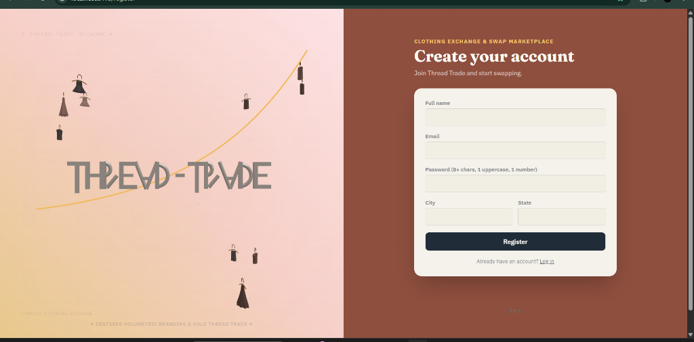
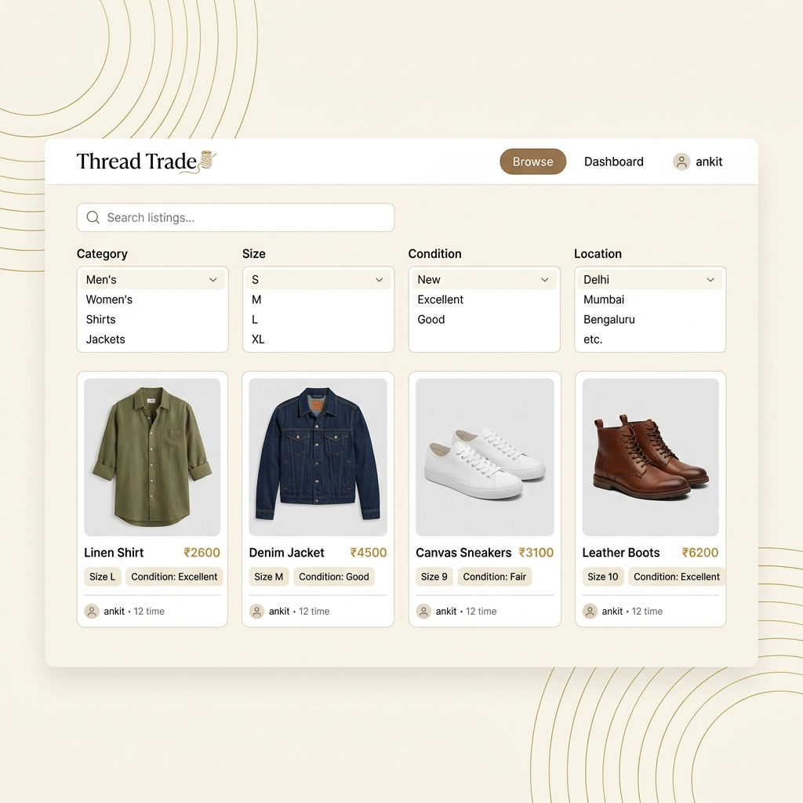
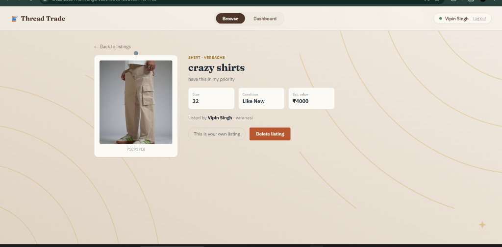
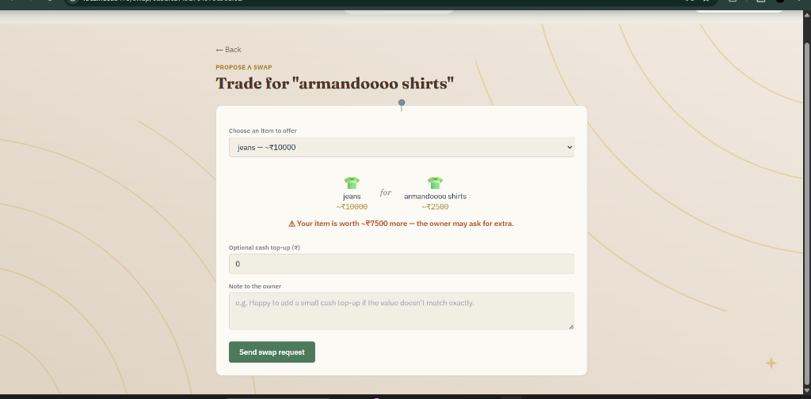
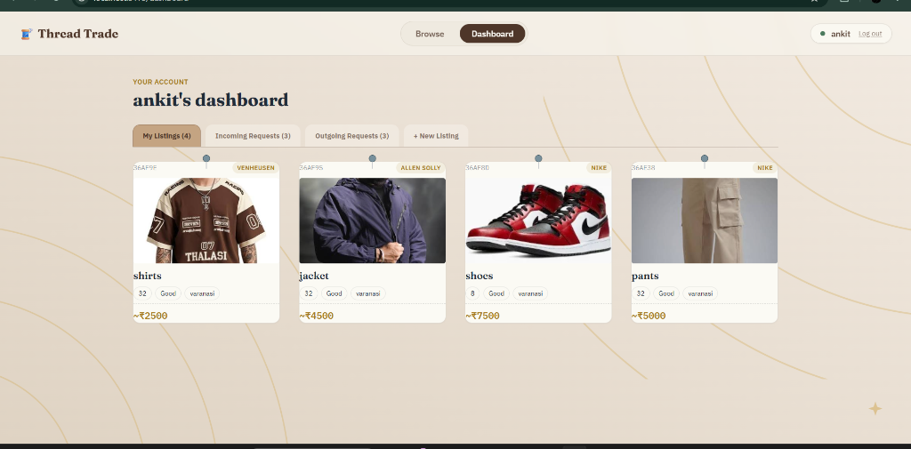
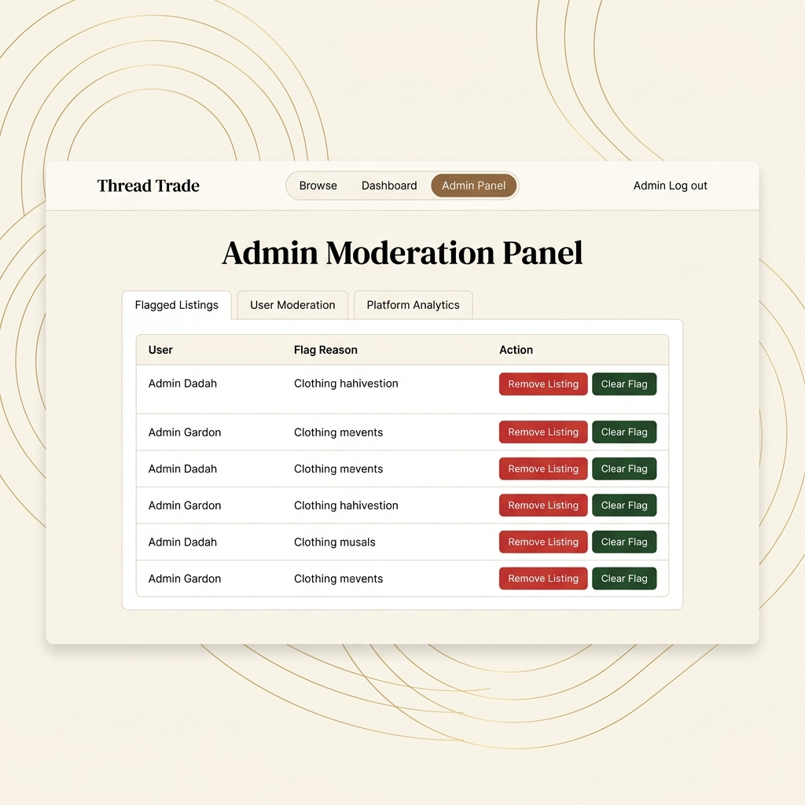

A full-stack, real-time barter platform designed to encourage circular fashion and mitigate global textile waste.
I would like to express my deepest gratitude to Unified Mentor Private Limited for providing me with the opportunity to work on this socially relevant and technologically stimulating project. This endeavor has allowed me to apply theoretical concepts of full-stack software development to a real-world environmental and consumer challenge.
I am immensely grateful to my mentors and guides who provided invaluable feedback, technical reviews, and strategic insights that helped shape the project architecture, database design, and interface experience. Their guidance was pivotal in taking the application from an initial conceptual state to a fully functional, containerized, and deployed solution.
I also wish to thank my peers and teammates who supported me with peer reviews, brainstorming sessions during tricky implementation phases (particularly around real-time synchronization with WebSockets and geospatial database indexing), and technical testing.
Finally, I want to thank my family and friends for their constant encouragement and patience during the late nights spent debugging concurrent Express connections and building robust database models. This project is a testament to their support.
The rise of the "fast fashion" business model over the past two decades has drastically shortened the lifecycle of garments, driving a massive surge in textile production and consumption. Consequently, global landfill sites are increasingly inundated with wearable clothing items, leading to severe environmental and ecological distress. While consumer interest in sustainable fashion practices is growing, mainstream e-commerce applications remain strictly transactional, focusing on commercial buying and selling. This financial barrier limits circular economy participation.
Thread Trade is a full-stack, barter-first clothing exchange and swap marketplace built specifically to bridge this gap. The platform enables users to directly upload and swap clothing items without any monetary transactions, promoting a localized circular economy. Thread Trade utilizes a modern MERN stack architecture (MongoDB, Express.js, React, Node.js) paired with WebSockets (Socket.IO) to handle high-frequency interactions such as direct negotiation chat.
Key features of the platform include a Geospatial Location-Based Matching System which utilizes 2D sphere indexes to help users find swap opportunities within walking distance, reducing logistics overhead. Additionally, an algorithm-based Swap Value Calculator automatically analyzes clothing conditions, brand tiering, and categories to suggest value-equitable matches. The application is integrated with role-based access control, a comprehensive admin dashboard, Cloudinary media hosting, and audit logging to ensure platform safety. This project report details the software engineering practices, architectural designs, database structures, and system testing methods used to successfully build and deploy Thread Trade.
| Cover Page | 1 | |
| Acknowledgment | 2 | |
| Abstract | 3 | |
| Table of Contents (Indexing) | 4 | |
| Chapter 1: Introduction & Project Context | 5 | |
| Chapter 2: Problem Statement | 6 | |
| Chapter 3: Project Objectives | 7 | |
| Chapter 4: Scope of Work | 8 | |
| Chapter 5: Functional Requirements — User & Listing | 9 | |
| Chapter 6: Functional Requirements — Swap & Chat | 10 | |
| Chapter 7: Functional Requirements — Core Services & Admin | 11 | |
| Chapter 8: Non-Functional Requirements | 12 | |
| Chapter 9: Technology Stack & Technical Justifications | 13 | |
| Chapter 10: System Architecture & Data Flow | 14 | |
| Chapter 11: Backend Codebase Architecture | 15 | |
| Chapter 12: Frontend Codebase Architecture | 16 | |
| Chapter 13: Module Detail — Authentication Flow | 17 | |
| Chapter 14: Module Detail — Listing Management | 18 | |
| Chapter 15: Module Detail — Swap Negotiation & Sockets | 19 | |
| Chapter 16: Module Detail — Geospatial & Value Systems | 20 | |
| Chapter 17: Database Schema Design — Schemas Part I | 21 | |
| Chapter 18: Database Schema Design — Schemas Part II | 22 | |
| Chapter 19: API Reference — Authentication & Users | 23 | |
| Chapter 20: API Reference — Listings & Swap Requests | 24 | |
| Chapter 21: High-Level User & Admin flows | 25 | |
| Chapter 22: Web Portal Page Visuals — Fig 1 & Fig 2 | 26 | |
| Chapter 23: Web Portal Page Visuals — Fig 3 & Fig 4 | 27 | |
| Chapter 24: Web Portal Page Visuals — Fig 5 & Fig 6 | 28 | |
| Chapter 25: Web Portal Page Visuals — Fig 7 & Fig 8 | 29 | |
| Chapter 26: Project Verification & Testing Plan | 30 | |
| Chapter 27: Assumptions, Constraints, & KPIs | 31 | |
| Chapter 28: Environmental Impact & Conclusion | 32 |
Over the past two decades, the global clothing industry has undergone a radical transformation. Driven by the "fast fashion" model, clothing brands have transitioned from traditional seasonal collections to continuous cycles of micro-seasons. Garments are manufactured cheaply, sold in high volumes, and discarded quickly. According to environmental research, global clothing production has doubled since 2000, while the average garment is worn less than ten times before disposal.
This pattern has triggered critical environmental consequences. The textile sector accounts for nearly 10% of global carbon emissions and is a major source of water depletion and chemical pollution. Millions of tons of garments are dumped annually into landfills or incinerated, even though a substantial portion of these clothes remain in excellent, wearable condition.
Sustainable fashion paradigms advocate for transition towards a circular economy where the lifecycle of garments is extended. Many individuals possess high-quality clothing that they no longer wear due to changes in personal style, fit, or preference. However, the friction involved in donating or selling items online—such as listing management, complex pricing negotiations, and payment processing fees—prevents wide-scale participation.
The Thread Trade project offers a digital alternative by creating an online environment dedicated entirely to clothing bartering. Instead of purchasing new apparel, users list items they no longer need and trade them directly for items owned by other community members, eliminating currency as a requirement for transaction.
Despite growing public awareness of the negative impacts of fast fashion, several critical bottlenecks prevent users from adopting sustainable alternatives. The primary challenges addressed by this project include:
Thread Trade resolves these friction points by implementing a dedicated web portal with built-in location matching, a state-based swap proposal flow, and an automatic value evaluation engine.
The core focus of Thread Trade is to build a reliable and accessible ecosystem for clothing swapping. The primary goals include:
The initial release of the Thread Trade platform focuses on core functionality, establishing a complete user experience for swapping clothes locally and negotiating trades. The components built in this phase are:
The following features are excluded from Phase 1 to focus on core transactional stability:
The User Management module governs access controls, credential security, profiles, and historical swap records. Detailed functional requirements are:
The Listing module manages the metadata, images, and lifecycle of individual garments offered for swap. Requirements include:
Available, Pending (when locked in a pending swap), Swapped
(completed transaction), or Removed (soft-deleted by user or admin).
The Swap Request module manages proposals, status tracking, and rules governing peer-to-peer exchanges:
Available items in exchange. The system
records the estimated values of both items at the time of creation.
Pending to prevent them from being offered in other swaps. If accepted, the
swap remains active. If rejected or cancelled, the items must immediately revert to Available.
Completed, which changes the items' statuses to Swapped and triggers review
prompts.
The Chat module enables communication between swap participants within a secure, authenticated channel:
The valuation calculator operates as an automated service to evaluate swap fairness:
This service manages geospatial features for localizing trade opportunities:
The administrative portal provides tools for moderation and platform oversight:
Non-functional requirements specify the technical constraints, quality standards, and security controls built into the Thread Trade architecture:
Thread Trade leverages a modern web stack to achieve development velocity, horizontal scalability, and real-time execution capability:
Thread Trade uses a classic client-server architecture with decoupling between the presentation layer (React SPA) and the logical engine (Express REST API + Socket.IO Server). Data is stored in a centralized MongoDB database.
The backend maintains statelessness. User authentication details are encoded into JSON Web Tokens, enabling any node in a load-balanced cluster to verify requests without querying a session table. Media streams are directed to Cloudinary, ensuring the backend server is not slowed down by file transfer tasks.
The backend codebase is organized around separation of concerns, dividing routes, controller logic, schema models, database connections, socket gateways, and utility functions into distinct modules.
The entrypoint of the application is server.js, which configures the HTTP server and attaches the
Socket.IO server. Standard middleware configurations (helmet, cors, morgan, express-mongo-sanitize) are
configured in src/app.js, which then forwards incoming requests to the respective routers under
src/routes/.
Business operations are housed within controllers, ensuring routers only serve as mapping filters. Database validations are checked using Mongoose schemas in the models folder, while API parameters are validated using Zod.
The frontend is structured as a React Single Page Application (SPA), compiling assets with Vite and utilizing React Router DOM for routing.
The AuthContext.jsx wraps the component tree, providing session management to all child nodes.
Access is governed by route guards (ProtectedRoute.jsx and AdminRoute.jsx). All
outgoing HTTP calls use a centralized Axios instance that intercepts responses to rotate expired JWT tokens
automatically. Real-time events are bound directly through the custom useSocket.js hook.
To maintain security, Thread Trade uses a hybrid JWT scheme. The login flow establishes access permissions without exposing credentials:
This authentication flow mitigates risks: if a malicious script tries to parse storage keys, it cannot find the long-lived refresh token since it is stored as an HTTP-only cookie. The short-lived access token is stored in memory, limiting its exposure window.
Managing apparel listings involves coordinate lookup, validation, and media compression:
When a user creates a listing, the Multer middleware intercepts the file buffer and streams it to the Cloudinary CDN. The CDN compresses the file, generates a web-optimized asset, and returns a secure URL and unique identifier to the controller. The controller combines this information with location details before writing to the database.
Once a swap request is generated, a negotiation space is created. Chat interactions utilize WebSockets to enable real-time messaging:
This connection uses a persistent TCP socket, bypassing the overhead of HTTP requests. Rooms are partitioned using the unique swap request ID, isolating communications to the involved swap participants.
The algorithm checks swap fairness based on parameters stored in the Listing schemas:
Location queries use MongoDB's geospatial indices:
// GeoJSON $near query execution
const listings = await Listing.find({
"location.coordinates": {
$near: {
$geometry: { type: "Point", coordinates: [lng, lat] },
$maxDistance: maxDistanceInMeters
}
},
status: "Available"
});| Field Name | Data Type | Validation / Reference | Purpose |
|---|---|---|---|
| _id | ObjectId | Primary Key (Auto-generated) | Unique User ID |
| name | String | Required, max: 80 chars | Display name |
| String | Required, Unique, Lowercase | Login credential | |
| password | String | Required, select: false | Bcrypt hashed password |
| role | String | Enum ['user', 'admin'] | Access control level |
| location.city | String | Trimmed | City name |
| location.state | String | Trimmed | State name |
| location.coordinates | 2dsphere Point | [lng, lat] coordinates | Geospatial queries |
| wishlist | Array of ObjectIds | Reference: Listing model | Saved garments |
| ratingAverage | Number | Default: 0, scale: 0-5 | Feedback score |
| Field Name | Data Type | Validation / Reference | Purpose |
|---|---|---|---|
| _id | ObjectId | Primary Key (Auto-generated) | Unique Listing ID |
| owner | ObjectId | Reference: User (Required) | Listing creator link |
| title | String | Required, max: 120 chars | Listing headline |
| description | String | Required, max: 1000 chars | Detailed description |
| category | String | Enum ['Shirt', 'Dress', 'Jacket'...] | Item classification |
| brand | String | Default: 'Unbranded' | Manufacturer name |
| size | String | Required, trimmed | Garment size tag |
| condition | String | Enum ['New with tags', 'Like New'...] | Physical condition |
| estimatedValue | Number | Required, min: 0 | Algorithmic cost value |
| status | String | Enum ['Available', 'Pending'...] | Item lifecycle status |
| Field Name | Data Type | Validation / Reference | Purpose |
|---|---|---|---|
| _id | ObjectId | Primary Key | Unique proposal ID |
| fromUser | ObjectId | Ref: User, Indexed | Request sender |
| toUser | ObjectId | Ref: User, Indexed | Request receiver |
| itemOffered | ObjectId | Ref: Listing, Required | Sender's garment |
| itemWanted | ObjectId | Ref: Listing, Required | Receiver's garment |
| valueOffered | Number | Snapshot value | Value of offered item |
| valueWanted | Number | Snapshot value | Value of wanted item |
| cashTopUp | Number | Default: 0 | Additional cash offered |
| status | String | Enum ['pending', 'accepted'...] | Swap status |
| Field Name | Data Type | Validation | Purpose |
|---|---|---|---|
| _id | ObjectId | Primary Key | Unique message identifier |
| swapRequest | ObjectId | Ref: SwapRequest, Required | Associated swap ID |
| sender | ObjectId | Ref: User, Required | Sender of message |
| text | String | Required, trimmed | Message body text |
| isRead | Boolean | Default: false | Read receipt flag |
| createdAt | Date | Timestamp | Message sending time |
Description: Registers a new user on the platform, hashing the password and initializing location coordinates.
// Request Body
{
"name": "Ananya Rao",
"email": "ananya@example.com",
"password": "Swap_123",
"location": { "city": "Varanasi", "state": "Uttar Pradesh" }
}
// Response Status: 201 CreatedDescription: Authenticates credentials, signs JWT, and returns an HTTPOnly refresh cookie.
// Response Body
{
"success": true,
"accessToken": "eyJhbGciOiJIUzI1NiIsIn...",
"user": { "id": "60d5ec...", "name": "Ananya Rao", "role": "user" }
}
// Response Status: 200 OKDescription: Refreshes the short-lived access token using the HTTPOnly refresh token cookie.
// Response Status: 200 OK / 401 Unauthorized (if cookie expired)Description: Returns active listings with support for search, pagination, category filtering, and location queries.
// URL Query Parameters: ?search=formal&category=Shirt&near=true
// Response Status: 200 OKDescription: Creates a new clothing listing. Requires JWT authorization header and handles multipart form data for image upload.
// Authorization: Bearer
// Form Data: title, description, category, size, condition, estimatedValue, images (file)
// Response Status: 201 Created Description: Proposes a swap, locks the items, and notifies the target user.
// Request Body
{
"itemOffered": "66a8cf12...",
"itemWanted": "66a8cf50...",
"cashTopUp": 150,
"note": "Let's trade this weekend!"
}
// Response Status: 201 CreatedThe standard user flow from login to swap completion follows a structured state lifecycle:
Administrators use the moderation panel to resolve disputes, review flags, and audit system operations:
The Login portal provides access controls with client-side credential verification. The page displays the brand values and leads users to registration.
The interface is styled with input validation that provides immediate error feedback to prevent unauthenticated database requests.
The Registration form captures mandatory user details, city/state attributes, and coordinates to configure geospatial proximity matching.

City and state fields are processed to extract GPS coordinates, which are indexed in MongoDB using a 2dsphere index.
The Browse page displays available listings, organized in a responsive grid. Users can search by keyword and filter by category, condition, size, and distance.

Each card displays the brand, category, condition, estimated value, and location. Listings locked in pending swaps are automatically hidden.
This interface displays detail view of individual items, detailing size, condition, owner information, and swap availability status.

This page displays description details, tags, and reviews of the owner. If the item belongs to another user, a "Propose Swap" option is made active.
This portal allows users to configure a swap request. Users select their offered item and set any top-up adjustments while the value calculator checks the fairness ratio.

As users adjust the cash top-up, the system recalculates and updates the fairness tag ("Fair Match" vs "Value Mismatch") to help users align expectations.
The Negotiation Chat page provides a real-time communication space for swap participants to negotiate terms, ask questions, or coordinate logistics.
The page displays messages in real-time, side-by-side with the swap request details, allowing users to modify or complete the swap without leaving the chat.
The User Dashboard provides controls for managing listing inventories, editing profiles, and tracking the status of sent and received requests.

Tabs organize listings by availability. Incoming requests display comparison details, allowing users to accept or decline trades directly from the dashboard.
The Admin Moderation Panel displays aggregate platform metrics, moderation queues, flagged listings, user lists, and audit logs.

This dashboard shows platform growth and activity metrics. Admins can moderate reported listings and manage user access controls to ensure platform safety.
Thread Trade underwent a detailed testing phase to verify database validations, role-based controls, state transition rules, and WebSocket event delivery.
The API endpoints were verified using test suites running mock data profiles. Key testing criteria included:
/api/admin return a
403 Forbidden response when accessed using standard user JWT credentials.
/api/auth/refresh endpoint using the cookie token.Manual verification scripts verified the state machine constraints:
Pending.Swapped and updates user swap history.Available, allowing them to be traded in other swap
requests.To measure the platform's performance and determine its effectiveness, the administrative dashboard tracks several Key Performance Indicators (KPIs):
The system architecture and business logic are built on several core operational assumptions:
The Thread Trade project comprises several components delivered to Unified Mentor Private Limited for validation:
The primary goal of the Thread Trade platform is to promote sustainability by providing an alternative to the fast-fashion consumption cycle. Expected positive outcomes include:
While the Phase 1 release establishes the platform's core swapping features, several enhancements are planned for future iterations:
The Thread Trade project demonstrates how a digital platform can facilitate circular fashion by replacing currency transactions with a localized, barter-first marketplace. The system's architecture combines a React frontend with a Node.js/Express API, MongoDB geospatial indexing, and real-time Socket.IO chat to deliver an intuitive user experience.
By incorporating proximity-based matching and a value fairness calculator, Thread Trade resolves common friction points in peer-to-peer swapping. Deployed on cloud infrastructure, the platform is prepared to grow and support a community dedicated to reducing textile waste and promoting sustainable fashion.